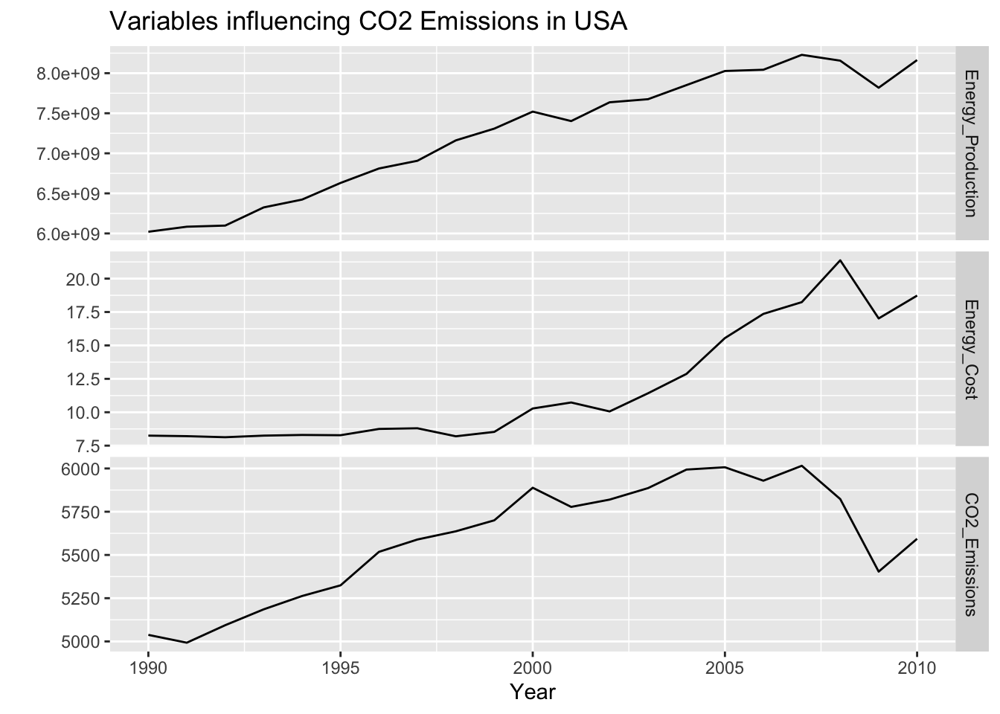
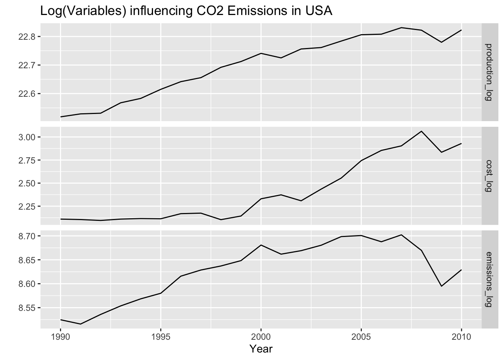
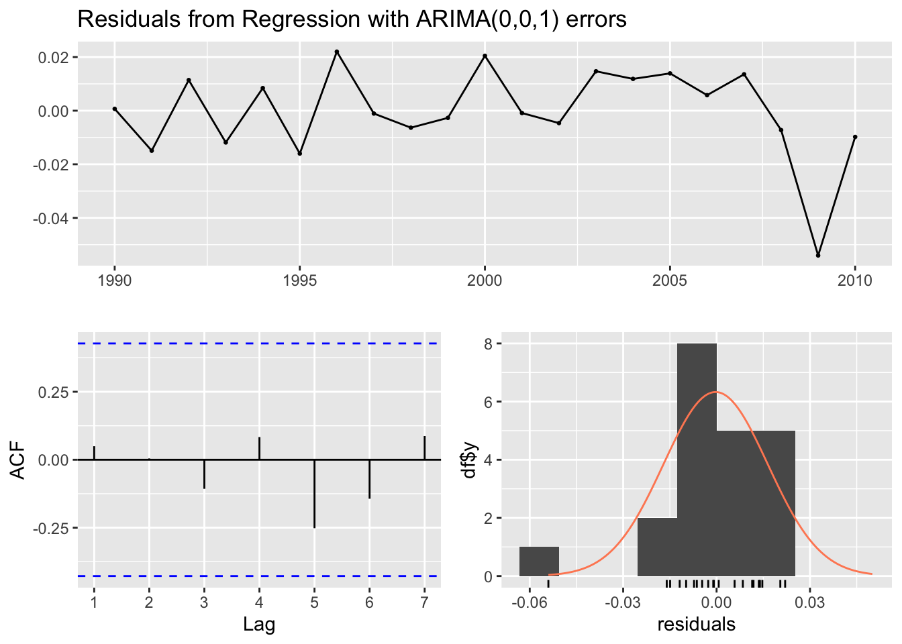
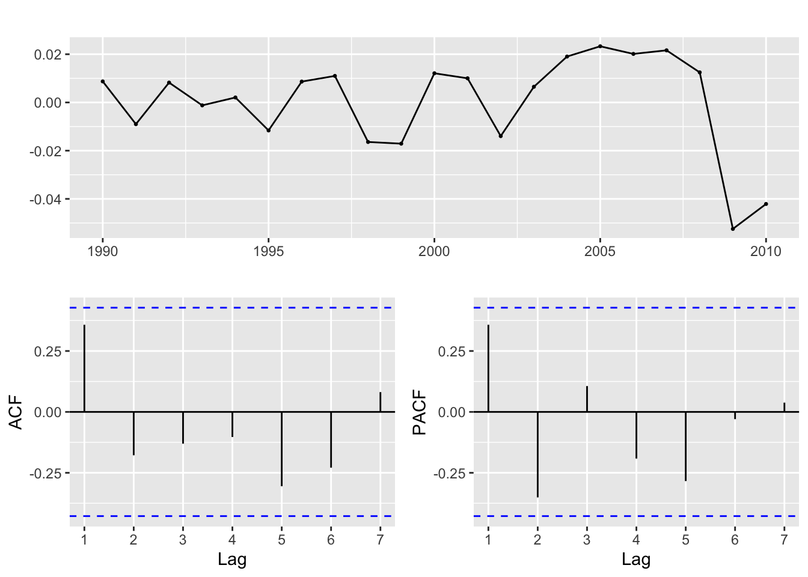
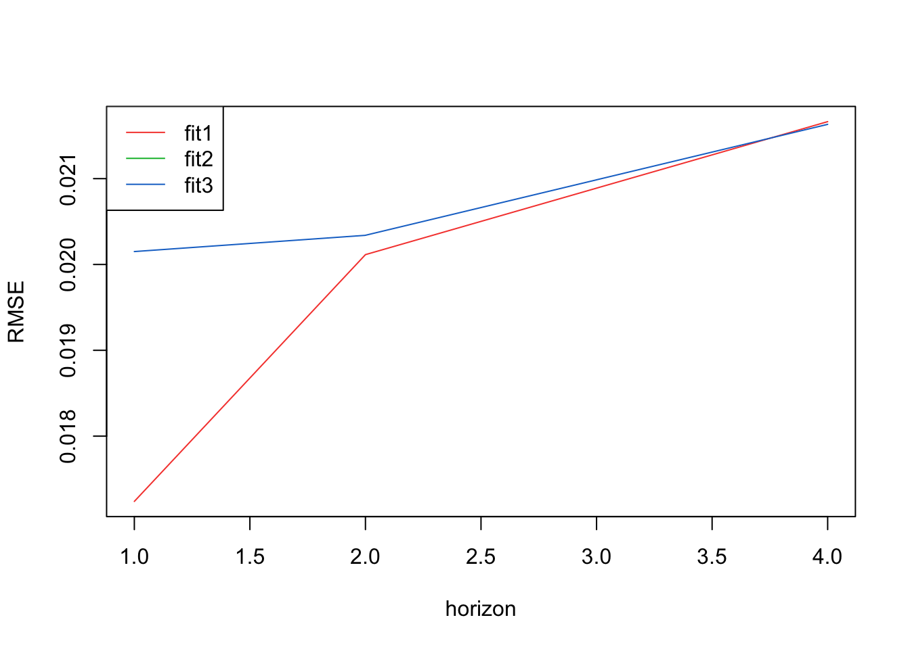
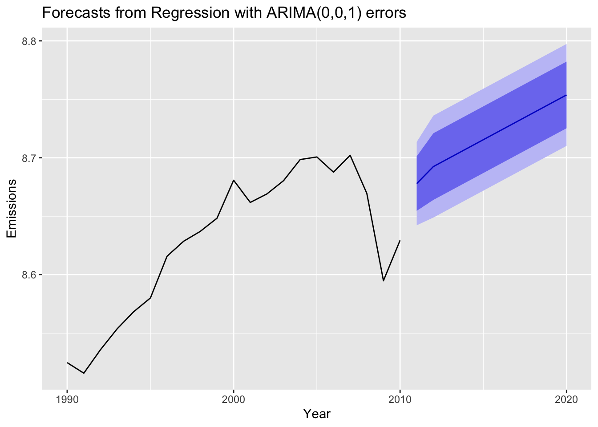

ARIMAX/SARIMAX/VAR

Predicting annual CO2 Emissions from energy cost and production 1990-2010
ARIMAX Model
Data:
YEAR Total.Output Total.Energy Total.CO2
1 1990-01-01 6021136938 8.25 5037.903
2 1991-01-01 6084119403 8.21 4992.691
3 1992-01-01 6098152107 8.13 5093.886
4 1993-01-01 6324830225 8.25 5185.525
5 1994-01-01 6422815640 8.30 5262.667
6 1995-01-01 6630217247 8.28 5324.315Plotting the data

Background Literature
This paper, Forecasting of transportation-related energy demand and CO2 emissions in Turkey with different ML algorithms utilizes energy production as a key predictive variable for CO2 emissions in Turkey between 1990-2014. Though many authors use Energy Consumption as a predictor for CO2 Emissions, production and consumption are closely tied due to economic demand for energy, so production is a worthy proxy.
This paper, Machine Learning in Estimating CO2 Emissions from Electricity Generation uses ML techniques to produce accurate modeling of energy costs, and then using a cost-effective analysis to estimate CO2 emissions. As prices fluctuate around different fuel sources, and natural gas in the US takes off and coal usage diminishes, it will be interesting to see if these cost fluctuations have any impact on CO2 emissions.
i) Choose response variables
The key response variable here is total CO2 emissions from 1990-2010. The independent variables are total electricity production and total cost of electricity between 1990-2010. Due to data availability, these years were chosen and analysis has to be done at the annual level.
ii) Log Transform
Log transform cost of energy, energy production, and co2 emissions.

iii) Fit using auto.arima()
Series: dd.ts[, "emissions_log"]
Regression with ARIMA(0,0,1) errors
Coefficients:
ma1 intercept Cost Production
0.7030 -6.8854 -0.0696 0.6908
s.e. 0.1988 2.1884 0.0313 0.0992
sigma^2 = 0.0003311: log likelihood = 56.22
AIC=-102.43 AICc=-98.43 BIC=-97.21
Training set error measures:
ME RMSE MAE MPE MAPE
Training set -0.0003141545 0.01637279 0.01201262 -0.004128035 0.1393188
MASE ACF1
Training set 0.5988199 0.04984199
Ljung-Box test
data: Residuals from Regression with ARIMA(0,0,1) errors
Q* = 0.56437, df = 3, p-value = 0.9045
Model df: 1. Total lags used: 4From auto.arima(), our model is an ARIMAX. This is a Regression model with ARIMA(0,0,1) with no errors. Though the data is highly non-stationary, the Arima model is being fit on the residuals, not the data itself. To compare, in part iv, I fit a model manually.
iv) Fit the model manually
First, fit the linear regression model predicting log_emissions using production, and cost of fuel. Then for the residuals, fit an ARIMA model.
Call:
lm(formula = emissions_log ~ cost_log + production_log, data = df)
Residuals:
Min 1Q Median 3Q Max
-0.052447 -0.011610 0.008236 0.012098 0.023289
Coefficients:
Estimate Std. Error t value Pr(>|t|)
(Intercept) -9.02651 1.84466 -4.893 0.000117 ***
cost_log -0.10326 0.02634 -3.920 0.001003 **
production_log 0.78870 0.08362 9.432 2.18e-08 ***
---
Signif. codes: 0 '***' 0.001 '**' 0.01 '*' 0.05 '.' 0.1 ' ' 1
Residual standard error: 0.02116 on 18 degrees of freedom
Multiple R-squared: 0.8915, Adjusted R-squared: 0.8794
F-statistic: 73.92 on 2 and 18 DF, p-value: 2.091e-09Now look at the residuals.

Interestingly, from the ACF/PACF plots the data looks stationary without differencing. Let’s do some model fitting of different parameters to experiment. Because there aren’t statistically significantly correlated lags (via spikes), I will experiment with:
p = 0,1,2 q = 0,1,2 d = 0,1,2
| p | d | q | AIC | BIC | AICc |
|---|---|---|---|---|---|
| 0 | 1 | 0 | -96.49384 | -95.49811 | -96.27162 |
| 0 | 2 | 0 | -75.45593 | -74.51149 | -75.22063 |
| 0 | 1 | 1 | -95.16930 | -93.17783 | -94.46342 |
| 0 | 2 | 1 | -85.88958 | -84.00070 | -85.13958 |
| 0 | 1 | 2 | -96.89392 | -93.90672 | -95.39392 |
| 0 | 2 | 2 | -84.23001 | -81.39669 | -82.63001 |
| 1 | 1 | 0 | -94.85582 | -92.86436 | -94.14994 |
| 1 | 2 | 0 | -78.09931 | -76.21043 | -77.34931 |
| 1 | 1 | 1 | -95.19374 | -92.20654 | -93.69374 |
| 1 | 2 | 1 | -84.09131 | -81.25800 | -82.49131 |
| 1 | 1 | 2 | -94.89881 | -90.91588 | -92.23215 |
| 1 | 2 | 2 | -82.51812 | -78.74036 | -79.66098 |
| 2 | 1 | 0 | -95.54231 | -92.55511 | -94.04231 |
| 2 | 2 | 0 | -82.50156 | -79.66824 | -80.90156 |
| 2 | 1 | 1 | -93.54351 | -89.56058 | -90.87684 |
| 2 | 2 | 1 | -84.04287 | -80.26512 | -81.18573 |
Choose the model that minmizes AIC, BIC, and AICc
p d q AIC BIC AICc
5 0 1 2 -96.89392 -93.90672 -95.39392 p d q AIC BIC AICc
1 0 1 0 -96.49384 -95.49811 -96.27162 p d q AIC BIC AICc
1 0 1 0 -96.49384 -95.49811 -96.27162The model that minimizes AIC is ARIMA(0,1,2) and the model that minimizes AICc and BIC is ARIMA(0,1,0)
v) Cross validation
Here I use cross validation to find the best model from the above 3 models.
auto.arima() chose Arima(0,0,1) manually - Arima(0,1,0) or Arima(0,1,2)
RMSEs from the three models

Mean RMSEs across three models
[1] 0.01723954 0.02011468 0.02088948 0.02166427[1] 0.02198930 0.02535139 0.02871347 0.03207556[1] 0.02015055 0.02034023 0.02098648 0.02163274The best model via RMSEs is Arima(0,0,1) actually! By a small margin.
vii) Forecast using model
Series: df$emissions_log
Regression with ARIMA(0,0,1) errors
Coefficients:
ma1 intercept Cost Production
0.7030 -6.8854 -0.0696 0.6908
s.e. 0.1988 2.1884 0.0313 0.0992
sigma^2 = 0.0003311: log likelihood = 56.22
AIC=-102.43 AICc=-98.43 BIC=-97.21
Training set error measures:
ME RMSE MAE MPE MAPE
Training set -0.0003141545 0.01637279 0.01201262 -0.004128035 0.1393188
MASE ACF1
Training set 0.5988199 0.04984199The model equation is: \[ \theta(B) = 1 - 0.7939(B) \]

The data only went until 2010, so emissions are forecasted for the next 10 years. The forecast from regression with ARIMA(0,0,1) predicts emissions steadily increase. Despite a dip in emissions in 2008, the forecast follows the upwards trend occurring at the end of the time series in 2010, which predicts growing emissions.
Source code for the above analysis: Github